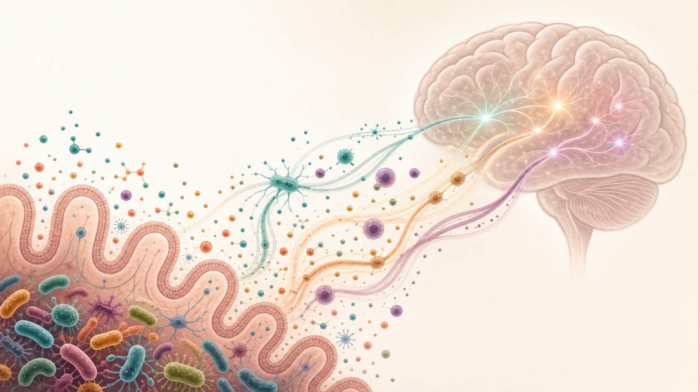
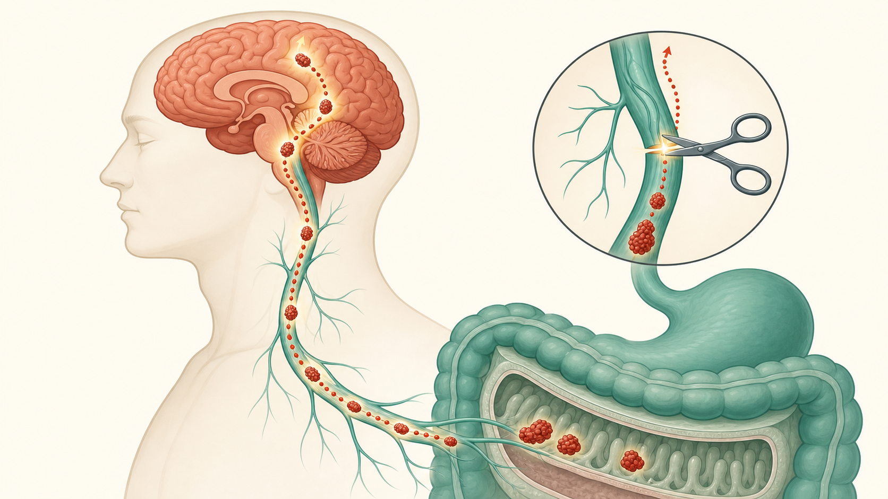

Two organs, one constant conversation
For centuries we treated the gut as plumbing. We now know it's one of the most heavily wired, chemically chatty organs in the body — and most of that wiring reports UP to the brain.
Two cities joined by a highway, a postal service, and a private phone line — all running at once, both directions.
Why the gut earns "second brain"
…and ~80% of the vagus nerve carries signals UP, gut → brain.
Brain basics — five ideas it hangs on
Two chemicals run it
GABA is the brake; glutamate the accelerator. Almost every effect is one pressing on the other.
Dopamine = "I want that"
Made in the reward circuit. Food, sugar, alcohol all push it. GLP-1 drugs turn it down.
The reward circuit
VTA → nucleus accumbens. Its dopamine neurons have a GABA "brake" — the whole GLP-1 story.
The walled brain
The blood–brain barrier seals it off — except a few leaky windows (CVOs) where drugs sneak in.
A second brain: the enteric nervous system
200–600 million neurons line the gut — more than the spinal cord — in two plexuses: the myenteric runs motility, the submucosal runs secretion & blood flow.
20+ neurotransmitters (ACh, nitric oxide, serotonin, GABA, dopamine). ~95% of body serotonin is gut-made (TPH1 in EC cells, TPH2 in neurons).
The vagus nerve: an 80% sensing highway
~80% of vagal fibers carry signals UP (gut→brain); only 20% carry commands down. Your gut talks far more than it listens.

Three lines in and out of the gut
Afferent (bottom-up)
Nodose fibers sense stretch & chemistry → NTS → hypothalamus, amygdala, hippocampus, cortex. One route even links gut to memory.
Efferent (top-down)
From the dorsal motor nucleus — they don't touch gut muscle directly; they synapse onto the ENS, which executes.
Spinal afferents
Splanchnic & pelvic fibers carry pain/noxious signals — the main route for visceral PAIN, vs the vagus's everyday chatter.
The hub: NTS
The nucleus tractus solitarius is the brain's "inbox" for the gut — and exactly where the GLP-1 drugs land.
The millisecond synapse: how the gut tastes sugar
Certain gut cells grow a tail — a neuropod — wiring directly into the vagus (glutamate, milliseconds). They tell real sugar from sweetener: glucose fires a strong SGLT1 signal driving dopamine reward; sweeteners only a weak one.
Four channels gut and brain talk on
Microbial chemicals
SCFAs from fiber calm inflammation & feed the brain; some microbes make GABA, dopamine, serotonin outright.
The stress line (HPA)
Stress hormones loosen the gut lining & unsettle microbes — a vicious loop back to the brain.
The anti-inflammatory brake
The vagus dials inflammation DOWN via acetylcholine on immune cells. Low vagal tone → more inflammation.
The immune wire & "leaky gut"
Bad microbes let bacterial bits into the blood, tripping the immune alarm toward the brain.
Short-chain fatty acids: fiber → brain signals
Bacteria ferment fiber into butyrate, propionate & acetate, acting on three receptors:
FFAR2 (GPR43)
On gut endocrine & immune cells — triggers GLP-1 & PYY release (the appetite hormones).
FFAR3 (GPR41)
On enteric, vagal, dorsal-root & sympathetic neurons — a direct neural sensor of microbial activity.
GPR109a
On colon epithelium & immune cells — part of the anti-inflammatory tone.
Butyrate's day job
Also an HDAC inhibitor — calms microglia; SCFAs help seal the blood–brain barrier.
One amino acid, three fates: tryptophan
| Pathway | Products | Why the brain cares |
|---|---|---|
| Serotonin | 5-HT (TPH1/TPH2) | ~95% of body serotonin; tunes vagus & ENS (doesn't cross BBB) |
| Kynurenine | Kynurenic vs quinolinic acid | Inflammation (IDO) tips the balance toward the NEUROTOXIC side |
| Indole | Indole-3-aldehyde, tryptamine | Activate AhR → IL-22 → barrier integrity & BBB upkeep |
Stress, the brake, and leaky gut
HPA stress axis
CRF raises gut permeability & dysbiosis. CRF-R1 speeds the colon (stress diarrhea); CRF-R2 slows the stomach.
Cholinergic brake
Vagus → acetylcholine → α7nAChR on macrophages → shuts off TNF-α. Low vagal tone shows up in IBD & IBS.
Leaky gut → brain
LPS & peptidoglycan cross into blood → TLR4/NF-κB → IL-1β, IL-6, TNF-α reach the brain. Microbes even train microglia.
Bravo 2011 — the proof
One probiotic strain changed brain GABA receptors & reduced anxiety in mice — abolished by cutting the vagus.
From what you eat, to messengers, to molecular keys

Trouble at one end shows up at the other
IBS
A "disorder of gut–brain interaction." Doubles–triples anxiety (HR 2.89) & depression (HR 2.71) risk — and vice versa.
IBD
Active disease ~2× anxiety (OR 2.5), 3× depression (OR 3.1). Depression predicts more flares & surgery.
Depression
A transdiagnostic signature: depleted butyrate-makers, enriched Eggerthella — shared across disorders.
Autism
GI issues in 47–80% of children; ASD-donor microbes transplanted into mice reproduce the behavior.
Parkinson's may start in the gut
α-synuclein — the Parkinson's protein — shows up in gut nerves years before the brain; constipation often precedes tremor by a decade. The "body-first" idea: it begins in the gut and climbs the vagus.

Registries: vagotomy decades earlier → ~41–47% lower PD risk.
Therapeutics — with the trial numbers
Probiotics
2025 meta (23 RCTs): depression SMD −0.96. But CANMAT rates them only a cautious third-line add-on.
Vagus stimulation (VNS)
RECOVER (n=493) missed its primary endpoint but improved QoL & function; taVNS matched citalopram.
Diet — cleanest evidence
SMILES (2017): Mediterranean diet beat control, NNT 4.1, remission 32% vs 8%.
Fecal transplant (FMT)
2025 meta (12 RCTs): depression SMD −1.21. Promising but no large RCTs yet.
Your gut and your decisions
Dantas et al. (2022) — the first placebo-controlled trial showing probiotics change economic decisions. Over 28 days the probiotic group became less risk-taking and more patient on real-money games.
Two of economics' most "fixed" assumptions shifted from a change in gut bacteria.
🎲 Risk
Fewer risky gambles than placebo.
⏳ Patience
More future-oriented choices — waiting for the bigger later reward.
Your own hormone vs. the drug
| Feature | Your own GLP-1 | The drug (semaglutide) |
|---|---|---|
| Half-life | 1–2 minutes | ~5–7 days |
| Mechanism | Whispers to nearby vagus | Travels in blood + reaches brain directly |
| Brain entry | Via vagus & brainstem | Through "leaky" windows (CVOs) |
| Needs the vagus? | Yes, for quick effects | No — works without it long-term |
| Regions reached | Mostly local brainstem | Brainstem, hypothalamus, reward & emotion |
It skips the brain's bouncer
Semaglutide barely crosses the blood–brain barrier. It slips in through circumventricular organs (CVOs) — area postrema & median eminence — where the barrier is deliberately leaky. With a 5–7 day half-life it parks at appetite & reward centers for days.

Turning down the dopamine
In the reward hub, GLP-1 receptors sit mostly on the BRAKES (VTA GABA neurons). The drug presses them, dopamine drops in the nucleus accumbens, and the pull of whatever you craved fades — food, alcohol, nicotine.
Caveat (Zhu 2025): in mice, dopamine & appetite recovered with repeated dosing — possible tolerance.

Promising, mixed, and one big surprise
Alcohol — strongest signal
Klausen (Lancet 2026): cut heavy-drinking days −13.7pp, NNT 4.3 — beating approved AUD meds.
Other habits
Lower use of nicotine (0.80), cocaine (0.80), opioids (0.75), cannabis (0.86). DPP-4 boosters don't work.
Mood
Swedish cohort: 42% lower risk of worsening mental illness (aHR 0.62) — agent-specific.
Suicidality — resolved
FDA & EMA: no causal link (144-RCT meta RR 0.76). The signal was media-driven reporting bias.
Neurodegeneration: promise, then phase-3 reality
| Trial | Agent | N | Length | Outcome |
|---|---|---|---|---|
| Exenatide-PD (2017) | Exenatide | 62 | 48 wk | Positive |
| LIXIPARK (2024) | Lixisenatide | 156 | 12 mo | Positive (borderline) |
| Exenatide-PD3 (2025) | Exenatide ph.3 | 194 | 96 wk | NEGATIVE (definitive) |
| EVOKE (Alzheimer's) | Oral semaglutide | — | — | Missed cognitive endpoint |
A gut-hormone drug shifts how we decide
Gill et al. (JAMA Psychiatry 2026): in 16 weeks of oral semaglutide, MDD patients became more willing to work for rewards — effort-cost fell (β −1.737, P=.03) — independent of any change in mood.
Probiotics nudged risk & patience; semaglutide nudged effort. Same reward dashboard, same hidden hand from the gut.
IBS rarely travels alone
The conditions that cluster with IBS often aren't in the gut — they share its machinery. Co-occurrence with IBS, far above chance:
GI overlaps
Functional dyspepsia (8× IBS odds) · GERD · functional constipation/diarrhea — >⅓ of DGBI overlap.
Pain & fatigue
Fibromyalgia (~49% have IBS) · chronic fatigue/ME (~51%) · TMJ (~64%) · migraine.
Pelvic & bladder
Endometriosis (2–3× IBS risk) · interstitial cystitis (30–75% have IBS).
Autonomic & mood
POTS (vagal withdrawal) · anxiety & depression (3× odds).
One axis, a convergence zone
Central sensitization
Repeated gut signals lower pain thresholds across organs — fibromyalgia, migraine, pelvic pain above chance.
Mucosal immune activation
Gut mast-cell/eosinophil cytokines reach the brain → fatigue, mood, headache.
Autonomic dysregulation
Sympatho-vagal imbalance hits gut, heart (POTS), bladder (IC), muscle (fibromyalgia) at once.
Bidirectional amplification
Distress → CRH → mast cells → leaky gut → inflammation → brain → more distress: a self-reinforcing loop.
High-vulnerability groups across the lifespan
| Population | Why vulnerable | How it shows up |
|---|---|---|
| Newborns (C-section) | Microbiome, nerves & stress system forming at once | Immune issues; later DGBI; neurodev. risk |
| Women (reproductive age) | Hormones tune gut sensitivity & the stress axis | IBS ~2× vs men; worse symptoms |
| Autistic children | ↓ diversity, ↓ butyrate-makers, barrier-gene variants | GI symptoms in 47–80% |
| IBD patients | Self-amplifying inflammation ↔ dysbiosis loop | 2–3× anxiety/depression; mood predicts flares |
| Trauma / PTSD | Stress hormones prime a pro-inflammatory gut | Anxiety, depression, somatic symptoms |
| The elderly | "Inflammaging" — diversity ↓, pathobionts ↑ | Cognitive decline; Alzheimer's / Parkinson's |
| Critically ill (ICU) | Antibiotics + stress wipe microbiome in hours | Sepsis; multi-organ failure |
A tiered, gut–brain ladder
| Tier | What it is | Headline evidence |
|---|---|---|
| 1 · Strong | Diet (low-FODMAP) · neuromodulators (low-dose amitriptyline) · CBT / gut-directed hypnotherapy · subtype drugs | Low-FODMAP ~57% vs 38%; amitriptyline NNT ~4; hypnotherapy ≤80% get ≥50% relief |
| 2 · Emerging | Mast-cell drugs (ebastine, ketotifen) · GLP-1 RAs · specific probiotic strains | GLP-1 (ROSE-010) cut IBS pain (OR 2.30); probiotics NNT ~7 |
| 3 · Experimental | Fecal transplant · vagus-nerve stimulation | Promising but trials-only for now |
The axis breaking in a self-amplifying loop
The amplifier in the gut–liver–brain axis
The liver gets ~70% of its blood from the gut (portal vein) — so dysbiosis-driven LPS, endogenous alcohol, and bile-acid shifts hit it first. The inflamed liver then broadcasts inflammation outward — even to the brain (linked to early Alzheimer's markers). GLP-1 RAs help here too, by calming the same axis.
The shadow of the same mechanism
| Side effect | Axis node | Same pathway as the benefit? |
|---|---|---|
| Nausea / vomiting | Area postrema (CVO) | Yes — the very CVO access that enables central appetite suppression |
| Bloating / slowed emptying | Vagus + ENS | Yes — slowed emptying also lowers post-meal glucose |
| Gallstones | Bile-acid axis | Indirect — ↓ CCK stalls the gallbladder; rapid weight loss adds risk |
| Muscle (lean-mass) loss | Hypothalamus + reward | Yes — the flip side of eating less; needs protein + resistance training |
Shot, pill, and beyond
| SC semaglutide | Oral semaglutide | Orforglipron (oral) | |
|---|---|---|---|
| Bioavailability | ~100% | 0.4–1% (needs SNAC) | High (small molecule) |
| Dosing rules | None | Fasting; ≤120 mL water; wait 30 min | None (tablet) |
| Needle? | Yes | No | No |
| ~Max weight loss | ~15% (2.4 mg) | ~15% (25 mg) | ~14.7% (phase 2) |
Takeaways for the dinner table
1 · You have two brains
~500M gut neurons, 95% of serotonin — talking to your head constantly, mostly upward.
2 · Microbes are messengers
Fiber → calming fatty acids; the right bugs make neurotransmitters. Diet tunes the chemistry.
3 · Breakdowns go both ways
IBS → depression → Parkinson's — gut & brain rise and fall together; sometimes the gut leads.
4 · It reaches your choices
Probiotics & GLP-1 drugs both nudge the reward circuit — risk, patience, craving, effort.
- 🥦 Eat fiber & fermented foods — feed the good bugs
- 🫒 Lean Mediterranean — the one diet with trial evidence for mood
- 😴 Manage stress & sleep — the stress line is real
- 🏃 Move your body — vagal tone & microbes both benefit
Your gut isn't just where food goes — it's a sensing, chemical, decision-shaping organ in lifelong conversation with your brain.